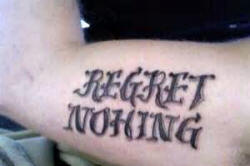
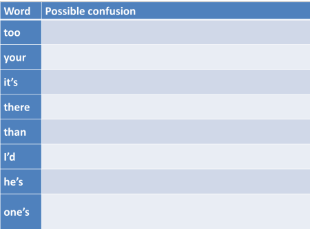

English spelling
 |
 |
 |
"a conspiracy to undermine a country that won't tow the western line" – BBC News website 17 December 2014
"Angry Hamilton accuses Vettel of breaking rules with break testing" – Daily Mail, 01 May 2018
 |
Earlier this month David Cameron, the prime minister, visited
Stonehenge ... and announced plans to duel the A303 The Daily Telegraph website 21 December 2014 (Image from Wikipedia, Eugene Onegin and Vladimir Lensky's duel, Ilya Repin, 1899.) |
We all make mistakes. There are three sorts above. Which is which?
- Slips and typographical errors
- Errors caused by the lack of sound-spelling consistency in English
- Errors caused by simply not knowing how a word is spelled
Right.
- The first two pictures (shcool and nohing) are just slips and they happen frequently. For the purposes of this guide, we can ignore them because they have nothing to do with spelling rules in English.
- The third picture (excellense) is the result of someone simply not knowing how the word excellence is spelled in English.
- The quotations from the BBC, Daily Mail and Daily Telegraph websites are errors caused by the lack of sound-spelling consistency in English. They are called homophone errors because toe and tow, break and brake and duel and dual sound the same but are differently written and mean different things. News sites are a rich source of such errors because many news stories are submitted by journalists over the telephone. Another example, from the Daily Telegraph, sadly since corrected, is the description of shelves which "grown with academic tomes".
 |
English spelling is wholly irregular and random. Right? |
Wrong.
It is often claimed that English spelling is impossible, or at least very difficult, to learn. For example:
English spelling is probably the most irregular spelling system of
all those based on the alphabetic system. Not only can't you tell
how to spell a word from hearing it spoken, you can't predict how a word
is spoken from the written word either.
The English Spelling Society
In fact, that is only very partially right because there are clear connections between how a word is pronounced and its spelling despite the fact, which is not arguable, that there are numerous exceptions.
To see how intuition and the application of simple rules allows you
to predict the sound of a word, try pronouncing these nonsense words.
Click here when you have tried the test.
| flubber | flooksendy | flimmax | greancumbler |
| drimble | bentle | heasering | chumblegrint |
You have (probably) never heard the words before but it is a safe bet
that you can make a guess concerning their pronunciation and, moreover,
most speakers of English will make the same guesses.
It will also work in reverse and most speakers of English can readily
write down these words spelling them in the same way as other speakers.
That is a sign of the fact that sound-spelling for the majority of
English words is entirely consistent and predictable. Speakers of
the language apply the same rules and arrive at the same spellings or
pronunciations.
If you can read phonemic transcription, by the way, here's the bet of
how you pronounced these words. If you can't read the phonemics, a
rough-and-ready guide is also in the list:
| flubber | flooksendy | flimmax | greancumbler |
| /ˈflʌ.bə/ | /ˈfluːk.ˌsendi/ | /ˈflɪm.mæks/ | /ˈɡriːn.ˌkʌm.blə/ |
| to rhyme with rubber | as fluke bendy | to rhyme with slim packs | to rhyme with green tumbler |
| drimble | bentle | heasering | chumblegrint |
| /ˈdrɪm.bl̩/ | /ˈben.tl̩/ | /ˈhiː.zər.ɪŋ/ | /ˈtʃʌm.bl̩.ˌɡrɪnt/ |
| to rhyme with thimble | to rhyme with gentle | to rhyme with teaser ring | to rhyme with crumble flint |
If English really were a language with no predictable sound-spelling consistency as the English Spelling Society claims, that would not have been possible.
To understand what follows, you need to understand that we are
considering sounds not letters.
So, for example, the single letter 'p' is represented as a
single sound (transcribed, i.e., written as /p/) and even a double 'p'
as in pepper still only has a single sound /p/ in the middle
and at the beginning.
Pairs of letters like 'sh', 'ch', 'th', 'ck', 'sc' etc. are
also often only single sounds as they are in, for example:
shave (transcribed as /ʃeɪv/ with a single symbol
[/ʃ/] representing the first two letters)
school (transcribed as /skuːl/ with a single symbol
[/k/] representing 'ch')
this (transcribed as /ðɪs/ with a single symbol
[/ð/] representing the first two letters)
sock (transcribed as /sɒk/ with a single symbol
[/k/] representing the last two letters)
science (transcribed as /ˈsaɪəns/ with a single
symbol [/s/] representing the first two letters)
You do not need to be able to read the phonemic transcriptions to understand what follows (although it will help).
 |
The rules |
Here's a short list of the rules:
Long and short vowels
- short vowels only usually require a single letter: bit, bat,
sit, hat, kit, cut and so on. This is the
Consonant-Vowel-Consonant principle or CVC. It is adhered to
in thousands of words and knowing it allows us to predict from the
spelling how, for example, all of the following will be pronounced.
The CVC principle also allows us to infer the spelling from the
sound, even if we have never heard the word.
combat
habitat
brickbat
humdrum
driven
and innumerable more words. - long vowels are represented in two ways:
- by inserting a vowel, often 'e' or 'i', after the consonant: bite, bate, site, stating, hate, kite, cute, driving and so on. This is the Vowel-Consonant-Vowel (VCV) principle.
- by inserting a second vowel letter before the consonant: beat, boat, heat etc. This is the Consonant-Vowel-Vowel-Consonant (CVVC) principle.
Applying to these two principles, along with principle a., allows us
to predict how another huge range of words will be pronounced,
including, for example:
confuse
drive
dreaming
skating
defeated
considerable
displeasing
contracting
disambiguation
and thousands more. Again, this will work in reverse: we can make
a very good guess at the spellings of these words when we hear them by
applying the principles.
There are exceptions (of course) and they are
common words, usually. They include:
come, done, give, gone, have, live, love, none, one, some
All these have short vowels but end VCV. They are quite simple to
learn and learners usually have little trouble pronouncing or spelling
them.
Consonant doubling
- consonant doubling often occurs in an effort to 'protect' the
short vowel sound.
If the consonant were not doubled in hatter, for example, the word would be pronounced as hater (because the VCV pattern would compel it) and the same goes for very many other words or word pairs such as diner-dinner, taper-tapper, cuter-cutter, fate, fatter, later-latter etc. This is the VCCV principle. - the consonant is doubled when adding an -ed or -ing ending only if the stress is on the second syllable: befit-befitting, remit-remitting but offer-offering etc. This rule is often broken so we get, e.g., focussed and focused, targetting and targeting.
- regardless of stress, British English doubles the consonant if it is 'p' or 'l'. American English does not.
Spelling the /k/ sound
The /k/ sound (as in, e.g., click, black, corn, bacon etc.) also obeys principles:
- single 'c' is the most common (and the way to bet) and can occur anywhere: actor, cactus, cart, because etc.
- doubling of the 'c' follows the same principle as any other consonant doubling: it protects the short vowel. So we have tobacco, Mecca etc. This is the VCCV principle, again.
- if the /k/ sound is followed by 'e', 'i' or 'y', 'k' is used instead of 'c': make, sketch, token, sake, slinky, skin etc.
- 'ck' similarly replaces 'cc' if it is followed by 'e', 'i' or 'y': panicky, tarmacked etc.
- 'ck' always follows a short vowel: luck, duck, back, fickle etc. This obeys the CVC principle because, as we saw, the 'ck' combination is actually a single consonant sound (/k/).
- 'k' follows any other vowel or consonant: soak, coke, musk, lark etc.
- /kw/ is always spelled 'qu': queen, quince, equine etc.
Spelling the /dʒ/ sound (as in the 'g' in gentle)
- if the sound is followed by 'a', 'o' or 'u', the letter 'j' is preferred: injure, just, jangle, jumble etc.
- if the sound is followed by 'e', 'i' or 'y', the letter 'g' is preferred: aged, ginger, gauge, original, mangy etc.
- 'j' cannot be doubled (to protect a short vowel, again) so 'dg' is used instead: judged, budgerigar
v
no English words end in 'v' so we always have a following 'e': thieve, save, shave etc.
ie or ei?
Schoolchildren learn to chant I before E except after C and for hundreds of words like believe, perceive, ceiling, thieving etc., the rule works just fine. Unfortunately, there are exceptions, as usual.
- Before gh, gn and ght: the spelling is ei
not ie:
weigh, neigh, foreign, feign, reign, height, freight - There are numerous exceptions which include:
beige, counterfeit, either, forfeit, heir, leisure, neither, rein, seize, their, veil, vein, weir, weird
Endings
- words ending in 'y'
- if you add an 's', the 'y' changes to 'ie': worry-worries, cry-cries etc.
- words ending in 'ey' usually do not change when an 's' or 'd' is added: valley-valleys, player-players-played etc. (But lay-laid, say-said etc.)
- 'y' does not change when it's followed by 'i': dry-drying, cry-crying, spy-spying etc.
- words ending in 'e'
- words ending in consonant + 'e' drop the 'e' when adding anything beginning with a vowel: love-loving, response-responsible etc. (But, in this case, the long vowel is often protected by retaining the 'e': likeable, mileage etc.)
- the soft 'c' (/s/) and 'g' (/dʒ/) sounds also mean that the 'e' is retained: manage-manageable, outrage-outrageous, trace-traceable etc.
- words ending in 'ie' change to 'y': die-dying, lie-lying
- words ending in 'ue' drop the 'e': argue-argument, true-truly
- words ending in 's', 'z', 'x', 'ch' or 'sh' take 'es': watch-watches, match-matches, fizz-fizzes, fix-fixes, bush-bushes, bus-buses etc.
(There is a little more on the spelling and pronunciation of verb endings in the guide to basic verb forms.)
So there are rules. Rather too many of them, in fact, and the list above is nowhere near complete.
 |
Teaching the rules |
You can't of course, teach all the rules listed here at one go.
Many would say that learning English spelling rules is actually
impossible, and unnecessary because people will pick up the patterns by
exposure. That's certainly arguable and it is clear that the more
exposure people have to examples of the patterns, the more likely they
are to absorb them.
It is, however, worth taking each of the regular patterns, one at a
time, and focusing 20 minutes or so on them now and again (weekly,
perhaps).
Spelling rules lend themselves to light-hearted games, races and
competitions in the classroom because they have Right/Wrong answers.
 |
Homophones |
As we saw, not even the BBC is immune to the homophone trap.
Many native speakers trip up in this area.
If you'd like a list of a couple of hundred common ones,
click here.
It is helpful, then, to look through the language you are presenting
just to see if there are any homophone traps the authors or you have
fallen into.
It is, however, not usually worth focusing on them because that can confuse as
much as it enlightens.
There are, however, a set of homophones in English on which it is worth focusing. In the following, can you detect the problem to describe in the right-hand column? Click on the table when you have a few notes.

 |
Why is English spelling irregular? |
OK, so spelling in English is tough because a) there are lots of
confusing rules and b) even when you have mastered the rules, there's
always an exception. If you look back at the list above, you can
probably find an exception to every single rule.
English spelling is something of a mess because of its history:
- Early printers were often not native speakers of English, even in England, and the influence of Dutch (their first language, frequently) is seen in, e.g., the insertion of the 'h' in ghost. (Even Caxton, the first well known English printer, had spent 30 years outside the country and his grasp of English writing was shaky.)
- English has a higher proportion than most languages of what are called loan words (i.e., words imported from other languages). This means that spelling in English sometimes follows the conventions of Scandinavian languages, French, Latin or Greek among others. Words may retain their spelling but the pronunciation is often Anglicized so the mismatch between spelling and pronunciation arises. The notoriously varied pronunciation of ough (cough, rough, thought, plough, through etc.) is a product of this sort of confusion.
- English does not have a regulating authority to rule on correct
spelling or introduce reforms. French and Spanish have
and many other languages, German, Portuguese, Norwegian etc. have
undergone repeated reforms to try to simplify and codify the
spelling of words (often in the teeth of considerable opposition).
There are hundreds of such academies around the world, all devoted
to formalising, correcting and sometimes reforming the way a
language is used and written. For example, we have:
The Académie française for French
The Nederlandse Taalunie for Dutch
The Rat für deutsche Rechtschreibung for German
The Institut d'Estudis Catalans for Catalan
The Accademia della Crusca for Italian
The Asociación de Academias de la Lengua Española for Spanish
and even
The Pontifical Academy for Latin
as well as at least 12 focused on Arabic of various forms.
English has never had such an academy (although some have tried to start one) so the language remains unreformed. - English is spoken as a first or second language by around 800 million people and it is an official language in around 60 countries. There are small but significant differences in spelling around the world. It is not only a difference between British and American spellings, either. Canadian English, for example, generally prefers color to colour but retains the British centre instead of the American center. Indian English usually prefers to follow British spelling conventions as does Australian English (at least nowadays) despite Australians normally using an American computer keyboard layout, by the way.
English spelling: the good news |
One advantage of having a rather odd spelling system is that meaning can often be inferred from spelling. For example, in English, these three words are pronounced the same (they are homophones):
rite, write, right
But, because of the different spellings, we can easily see which are connected to the following words and if we know the base word, we can have a good stab at inferring the meaning of the others:
written, ritual, rightness, rights, writing, rites, righteous
Spelling and
meaning, in English, are connected.
Reforming English spelling would mean that this handy reference
would disappear and all three words would probably be spelled rite.
That, many argue, would be a loss. English, they point out, is not
meant to have a phonetic spelling
system.
So, next time your students despair of being able to spell correctly, it may be worth pointing this out.
Another thing to point out to despairing learners is that native
speakers also have trouble. We often see, for example, dessicate,
acommodation (or accomodation), embarass, wierd, definately and so on.
You, of course, can correct all those.
 |
Diacritics |
The term diacritic refers to the accent marks which exist in many languages and show a
difference in pronunciation (or used to).
Modern English retains the use of some accent marks on imported words,
almost always those from French, but it is often a matter of personal
taste. Using role instead of rôle is
common and hôtel is almost never seen, for example.
However, in other cases, words more recently or more obviously borrowed
from French retain the accents: cliché, café, vis-à-vis,
tête-à-tête etc.
When there is a possibility of ambiguity, the convention is to retain
the accent markers, so we have résumé and
resume.
Loan words from other languages usually get stripped of their
diacritics, although über from German is seen alongside
uber. The words doppelganger and doppelgänger
are in free variation and English usually removes the capital letter
obligatory on German on all nouns. The Turkish döner
kebap is almost always spelled as doner kebab in English.
 |
 |
English (BrE) and American (AmE) |
English (BrE) and American spelling (AmE) differ as everyone knows
but the differences are not huge. The number of words affected is
probably fewer than 400. (Given that the 20-volume Oxford English
Dictionary contains entries for 171,476 words in current use, and the
Oxford website estimates that there are at least 250,000 distinct words
in English, that
represents a tiny proportion, less than 0.25%.)
In most cases, the AmE variant is simpler.
Here are the most commonly cited differences:
- the 'u' is omitted for the BrE colour, favour etc. to give color, flavor etc. In fact, the spelling without the 'u' was the normal one in Britain until Shakespeare's time. By the way, glamour is spelled the same in both varieties.
- final 'e' is dropped from words like axe and when adding a suffix which makes the 'e' silent as in ageing (BrE) and aging (AmE). Note, however, that both varieties usually keep the 'e' when losing it would affect the pronunciation of the preceding consonant so both BrE and AmE have changeable, traceable etc. BrE does in fact often drop the 'e' in words like lovable, movable, provable etc.
- likewise the final silent vowels on words like catalogue and dialogue are dropped to get the AmE catalog and dialog. (This does not happen with tongue which is spelled the same in both varieties.)
- words in BrE which end '-mme' usually end simple '-m' in AmE: programme, program is the only obvious example but some British English speakers use kilogramme and telegramme. That is becoming quite rare.
- words ending '-re' in BrE are generally spelled with '-er' in AmE: centre, center, fibre, fiber, calibre, caliber etc.
- words which end with '-ce' in BrE will often end with '-se' in AmE: defence, defense, offence, offense etc.
- when BrE distinguishes between the noun (e.g., practice, licence) and the verb (e.g., practise, license), AmE does not, preferring the '-ce' ending for all.
- BrE prefers, on the whole, '-ise' in
words like organise but both spellings are acceptable (the '-ize'
spellings are those preferred by Oxford University Press, for
example). AmE prefers '-ize' on such words although there are
exceptions in words like advertise, comprise, exercise,
franchise etc. due to the words' sources. The same
consideration affects the small number of words ending in '-yse' /
'-yze' where BrE prefers analyse and paralyse,
most AmE writers will use analyze and paralyze.
Some words, such as capsize and prize are spelled with the 'z' in both varieties. In fact, again, the '-ize' ending is the older one and the '-ise' ending a relative newcomer. - there is a small and not especially interesting debate concerning the alternative spellings of, e.g., connection/connexion, inflexion/inflexion and so on. It was the case that BrE preferred the 'x' spelling but this is no longer standard in most texts. The differences were due to British users' insistence on complying with the words' Latin etymologies. On this site, inflexion is spelled with the 'x' alternative but the forms are in free variation in other cases. (There are two exceptions: complexion and crucifixion are spelled with 'x' in all varieties.)
- BrE doubles the final 'l' in, e.g., label - labelled, cancel - cancelled but AmE usually does not (labeled, canceled).
- BrE 'ae' and 'oe' spellings on foreign words are usually reduced to 'e' in AmE so we have encyclopaedia and encyclopedia etc. The simpler spelling is becoming more common in BrE.
- In British English, inquiry means a formal investigation and enquiry means simply questioning. In AmE, only inquiry exists. Similarly, insure in British usage means protect against and ensure means make certain. In AmE usage, only insure is used.
- There are some other minor, random
differences (BrE / AmE):
aeroplane / airplane
cosy / cozy
storey / story (for a building)
cheque / check (with a change in meaning from money order to bill)
grey / gray
gaol / jail (the latter is now ubiquitous in BrE and the former considered old fashioned)
mould / mold
plough / plow
speciality / specialty
jewellery / jewelry - Hyphenation is less frequently used in
AmE than in BrE so we get, e.g.
re-enter / reenter
pre-empt / preempt
and so on.
As a rule of thumb, Commonwealth countries tend to follow the BrE rules although Canadian use is more often influenced by AmE.
There's no test on all this but there are plenty of spelling tests to
be had on line (with a good one at
http://www.oxforddictionaries.com/spelling-challenge/) and two on
this site. One for B1/B2-level learners,
here, and another for A1/A2-level learners
here.
There is also a
short lesson for learners with tests and exercises covering the
essentials of this guide.
 |
Writing systems |
This survey of English spelling would not be complete (as far as
teaching the system is concerned) without some consideration of other
people's writing systems.
There are three fundamental sorts:
- Alphabetic systems
English has ostensibly an alphabetic system in which individual letters represent individual sounds (phonemes) but, as we saw above, spelling in English is not a good guide often to pronunciation and vice versa. English may be described as having deep orthographic depth. This means that the system is poor in relation to shallow languages such as German or Serbo-Croat in which there is a good correspondence between spelling and pronunciation.
Most European languages and many languages which have only recently acquired a written form use an alphabetic system of writing although scripts vary from Latin (in which this is written) through Greek and Cyrillic to many other systems. For obvious reasons, alphabetic systems are sometimes referred to as segmental systems because each word can be broken down into sound segments. - Syllabic systems
In these writing systems, each grapheme (i.e., independent symbol) represents a syllable rather than a single sound. Examples include Arabic, the Japanese Hiragana script, Hebrew and Amharic among others. Languages which deploy scripts like these usually have a syllabary (i.e., the total number of available syllables) which is quite limited. English would be ill-suited to such as system as the number of possible syllables is well over 10,000 and each would require a separate grapheme to represent it. Japanese, by contrast, makes do with around 100 syllables so the language is suited to this form of written representation.
The Arabic script is used incidentally, for many other languages unrelated to Arabic (or only distantly so). - Logographic systems
In these systems, each word is represented by a single symbol. The most obvious and famous examples are the Chinese languages and these are the only common surviving languages to use a logographic system. For example, the symbol represents the concept of sun or day. Egyptian hieroglyphics are another familiar form of logographic writing. Chinese characters are extensively used in written Japanese, Korean and Vietnamese.
Each type of writing system is processed by readers in a different way and there is good reason to suppose that these processing strategies will, especially in the early stages of learning, be carried over to attempts to read in English. For example, Arabic speakers may be indifferent to vowels (as they are not represented in Arabic) and may confuse, e.g., glass with gallons. Even speakers of languages which use a Latin script such as Spanish may have problems processing words in English because Spanish has a relatively shallow orthography.
 |
Spelling sounds |
One area of clear irregularity in English concerns the spelling of
individual sounds rather than whole words. English is not unique
in this respect but it is, perhaps, an extreme example.
Many other languages, including Portuguese and Modern Greek have very
weak relationships between sound and spelling. Portuguese, for
example, has only 5 vowel symbols but these can be pronounced in 17
different ways and the language's 18 consonants have 30 pronunciations.
Modern Greek has no fewer than 6 ways to spell the long 'ee' (/iː/)
sound.
This makes writing unknown words down from dictation in English a very challenging and often disheartening business. It is much easier to write down accurately what you hear in some other languages, especially those that have undergone occasional reform of the writing system to get closer to a one-to-one relationship between the sound and the spelling, such as German or Spanish.
In the in-service section of this site, some detail is provided concerning how consonant and vowel sounds are conventionally spelled in English. For consonants, for example:
Vowel sounds are more variable so, for example:
If you would like to know more, click here to go to the in-service pronunciation index and select the guides from there.
References:
BBC News:
http://www.bbc.com/news/world-europe-30492348 [accessed
17/12/2014]
Campbell, G, 1998, Concise Compendium of the World's Languages,
London: Routledge
Chalker, S, 1987, Current English Grammar, London: Macmillan
Daily Telegraph:
http://www.telegraph.co.uk/news/earth/environment/archaeology/11303127/Stonehenge-discovery-could-rewrite-British-pre-history.html
[accessed 21/12/2014]
Oxford dictionaries on line:
http://www.oxforddictionaries.com [accessed
17/12/2014]
Proctor, P (Editor in Chief), 1995,
Cambridge International Dictionary of English, Cambridge,
Cambridge University Press
The
English Spelling Society:
http://www.spellingsociety.org/
[accessed 17/12/2014]